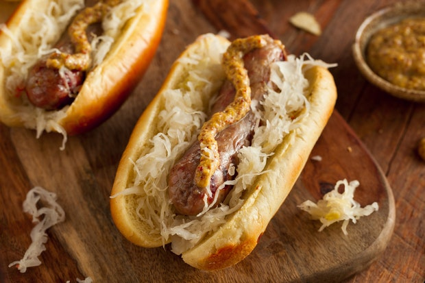

Bratwurst

This is a great dinner thats relatively easy to make.
1
Ingredients
- 1 Bratwurst
- 1 Buns
- 1 Tbsp Sauerkraut
- 1 Tsp Musturd
- 1 Tbsp Butter
Instructions
- Put a tablespoon of butter in the pan and heat for a minute.
- Once pan is hot cook bratwurst over medium heat for 10 minutes, turning occasionally.
- Add sauerkraut to pan and cook for an additional 5 minutes.
- Put bratwurst and sauerkraut in bun and top with musturd.